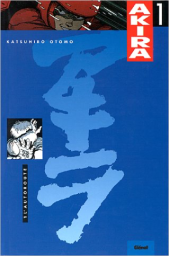akira, tome 1 : l'autoroutekatsuhiro otomo 5 Néo-Tokyo, an 2019. Nous sommes trente-huit ans après la troisième Guerre mondiale. Le grand cataclysme a dévasté la planète. Depuis, le monde a entamé sa reconstruction. La capitale japonaise n'est plus qu'une espèce de gigantesque poubelle high-tech. Une nuit, une bande de jeunes motards fait une rencontre étrange : celle d'un enfant au visage de vieillard, doté de bien curieux pouvoirs. Ils ne le savent pas encore, mais le processus de réveil d'Akira vient de commencer... Sombre vision d'un futur aux allures d'apocalypse, Akira dépeint une société en perdition livrée aux enfants mutants, aux sectes religieuses et aux forces surnaturelles. Avec son sens du mouvement et de la vitesse, le dynamisme de son graphisme et son hyperréalisme, cette saga, entamée en 1982, est l'une des oeuvres majeures de l'histoire des mangas. Elle est née de l'imagination de Katsuhiro Otomo, un auteur qui a largement contribué à faire reconnaître le genre hors des frontières de son pays natal. —Gilbert Jacques 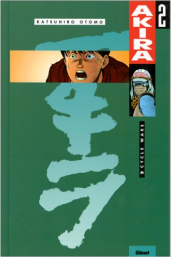akira, tome 2 : cycle warskatsuhiro otomo 5 Néo-Tokyo, an 2019. Nous sommes trente-huit ans après la troisième Guerre mondiale. Le grand cataclysme a dévasté la planète. Depuis, le monde a entamé sa reconstruction. La capitale japonaise n'est plus qu'une espèce de gigantesque poubelle high-tech. Une nuit, une bande de jeunes motards fait une rencontre étrange : celle d'un enfant au visage de vieillard, doté de bien curieux pouvoirs. Ils ne le savent pas encore, mais le processus de réveil d'Akira vient de commencer... Sombre vision d'un futur aux allures d'apocalypse, Akira dépeint une société en perdition livrée aux enfants mutants, aux sectes religieuses et aux forces surnaturelles. Avec son sens du mouvement et de la vitesse, le dynamisme de son graphisme et son hyperréalisme, cette saga, entamée en 1982, est l'une des oeuvres majeures de l'histoire des mangas. Elle est née de l'imagination de Katsuhiro Otomo, un auteur qui a largement contribué à faire reconnaître le genre hors des frontières de son pays natal. —Gilbert Jacques 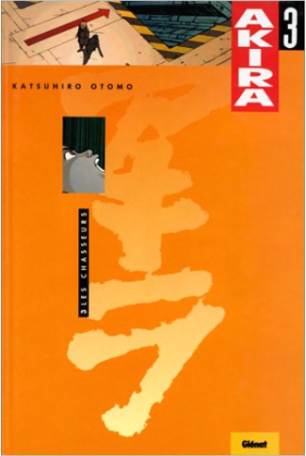akira, tome 3 : les chasseurskatsuhiro otomo 5 Néo-Tokyo, an 2019. Nous sommes trente-huit ans après la troisième Guerre mondiale. Le grand cataclysme a dévasté la planète. Depuis, le monde a entamé sa reconstruction. La capitale japonaise n'est plus qu'une espèce de gigantesque poubelle high-tech. Une nuit, une bande de jeunes motards fait une rencontre étrange : celle d'un enfant au visage de vieillard, doté de bien curieux pouvoirs. Ils ne le savent pas encore, mais le processus de réveil d'Akira vient de commencer... Sombre vision d'un futur aux allures d'apocalypse, Akira dépeint une société en perdition livrée aux enfants mutants, aux sectes religieuses et aux forces surnaturelles. Avec son sens du mouvement et de la vitesse, le dynamisme de son graphisme et son hyperréalisme, cette saga, entamée en 1982, est l'une des oeuvres majeures de l'histoire des mangas. Elle est née de l'imagination de Katsuhiro Otomo, un auteur qui a largement contribué à faire reconnaître le genre hors des frontières de son pays natal. —Gilbert Jacques 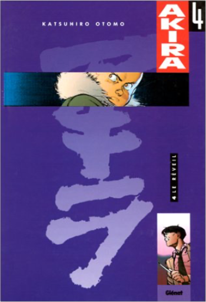akira, tome 4 : le réveilkatsuhiro otomo Néo-Tokyo, an 2019. Nous sommes trente-huit ans après la troisième Guerre mondiale. Le grand cataclysme a dévasté la planète. Depuis, le monde a entamé sa reconstruction. La capitale japonaise n'est plus qu'une espèce de gigantesque poubelle high-tech.
Une nuit, une bande de jeunes motards fait une rencontre étrange : celle d'un enfant au visage de vieillard, doté de bien curieux pouvoirs. Ils ne le savent pas encore, mais le processus de réveil d'Akira vient de commencer... Sombre vision d'un futur aux allures d'apocalypse, Akira dépeint une société en perdition livrée aux enfants mutants, aux sectes religieuses et aux forces surnaturelles. Avec son sens du mouvement et de la vitesse, le dynamisme de son graphisme et son hyperréalisme, cette saga, entamée en 1982, est l'une des oeuvres majeures de l'histoire des mangas. Elle est née de l'imagination de Katsuhiro Otomo, un auteur qui a largement contribué à faire reconnaître le genre hors des frontières de son pays natal. —Gilbert Jacques 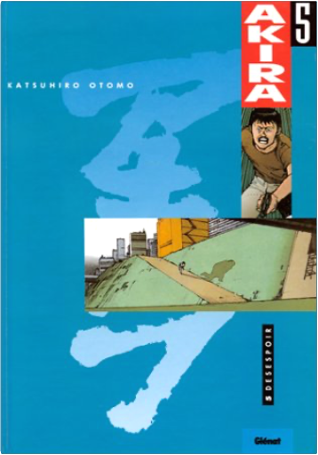akira, tome 5 : désespoirkatsuhiro otomo 5 Néo-Tokyo, an 2019. Nous sommes trente-huit ans après la troisième Guerre mondiale. Le grand cataclysme a dévasté la planète. Depuis, le monde a entamé sa reconstruction. La capitale japonaise n'est plus qu'une espèce de gigantesque poubelle high-tech.
Une nuit, une bande de jeunes motards fait une rencontre étrange : celle d'un enfant au visage de vieillard, doté de bien curieux pouvoirs. Ils ne le savent pas encore, mais le processus de réveil d'Akira vient de commencer... Sombre vision d'un futur aux allures d'apocalypse, Akira dépeint une société en perdition livrée aux enfants mutants, aux sectes religieuses et aux forces surnaturelles. Avec son sens du mouvement et de la vitesse, le dynamisme de son graphisme et son hyperréalisme, cette saga, entamée en 1982, est l'une des oeuvres majeures de l'histoire des mangas. Elle est née de l'imagination de Katsuhiro Otomo, un auteur qui a largement contribué à faire reconnaître le genre hors des frontières de son pays natal. —Gilbert Jacques 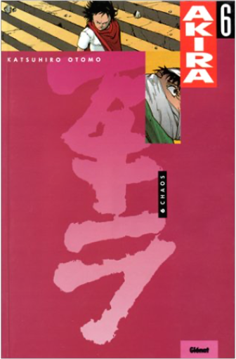akira, tome 6 : chaoskatsuhiro otomo Néo-Tokyo, an 2019. Nous sommes trente-huit ans après la troisième Guerre mondiale. Le grand cataclysme a dévasté la planète. Depuis, le monde a entamé sa reconstruction. La capitale japonaise n'est plus qu'une espèce de gigantesque poubelle high-tech.
Une nuit, une bande de jeunes motards fait une rencontre étrange : celle d'un enfant au visage de vieillard, doté de bien curieux pouvoirs. Ils ne le savent pas encore, mais le processus de réveil d'Akira vient de commencer... Sombre vision d'un futur aux allures d'apocalypse, Akira dépeint une société en perdition livrée aux enfants mutants, aux sectes religieuses et aux forces surnaturelles. Avec son sens du mouvement et de la vitesse, le dynamisme de son graphisme et son hyperréalisme, cette saga, entamée en 1982, est l'une des oeuvres majeures de l'histoire des mangas. Elle est née de l'imagination de Katsuhiro Otomo, un auteur qui a largement contribué à faire reconnaître le genre hors des frontières de son pays natal. —Gilbert Jacques 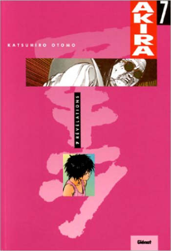akira, tome 7 : révélationskatsuhiro otomo Néo-Tokyo, an 2019. Nous sommes trente-huit ans après la troisième Guerre mondiale. Le grand cataclysme a dévasté la planète. Depuis, le monde a entamé sa reconstruction. La capitale japonaise n'est plus qu'une espèce de gigantesque poubelle high-tech.
Une nuit, une bande de jeunes motards fait une rencontre étrange : celle d'un enfant au visage de vieillard, doté de bien curieux pouvoirs. Ils ne le savent pas encore, mais le processus de réveil d'Akira vient de commencer... Sombre vision d'un futur aux allures d'apocalypse, Akira dépeint une société en perdition livrée aux enfants mutants, aux sectes religieuses et aux forces surnaturelles. Avec son sens du mouvement et de la vitesse, le dynamisme de son graphisme et son hyperréalisme, cette saga, entamée en 1982, est l'une des oeuvres majeures de l'histoire des mangas. Elle est née de l'imagination de Katsuhiro Otomo, un auteur qui a largement contribué à faire reconnaître le genre hors des frontières de son pays natal. —Gilbert Jacques 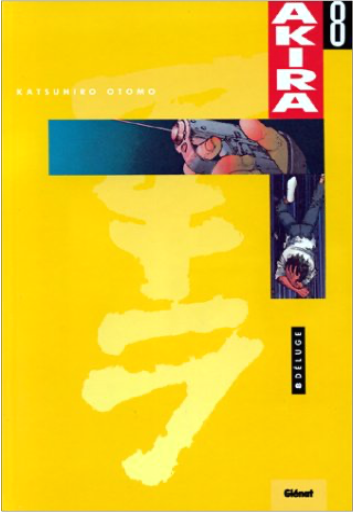akira, tome 8 : délugekatsuhiro otomo Néo-Tokyo, an 2019. Nous sommes trente-huit ans après la troisième Guerre mondiale. Le grand cataclysme a dévasté la planète. Depuis, le monde a entamé sa reconstruction. La capitale japonaise n'est plus qu'une espèce de gigantesque poubelle high-tech.
Une nuit, une bande de jeunes motards fait une rencontre étrange : celle d'un enfant au visage de vieillard, doté de bien curieux pouvoirs. Ils ne le savent pas encore, mais le processus de réveil d'Akira vient de commencer... Sombre vision d'un futur aux allures d'apocalypse, Akira dépeint une société en perdition livrée aux enfants mutants, aux sectes religieuses et aux forces surnaturelles. Avec son sens du mouvement et de la vitesse, le dynamisme de son graphisme et son hyperréalisme, cette saga, entamée en 1982, est l'une des oeuvres majeures de l'histoire des mangas. Elle est née de l'imagination de Katsuhiro Otomo, un auteur qui a largement contribué à faire reconnaître le genre hors des frontières de son pays natal. —Gilbert Jacques 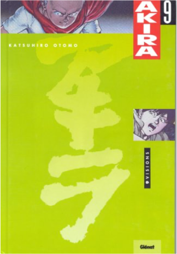akira, tome 9 : visionskatsuhiro otomo Néo-Tokyo, an 2019. Nous sommes trente-huit ans après la troisième Guerre mondiale. Le grand cataclysme a dévasté la planète. Depuis, le monde a entamé sa reconstruction. La capitale japonaise n'est plus qu'une espèce de gigantesque poubelle high-tech.
Une nuit, une bande de jeunes motards fait une rencontre étrange : celle d'un enfant au visage de vieillard, doté de bien curieux pouvoirs. Ils ne le savent pas encore, mais le processus de réveil d'Akira vient de commencer... Sombre vision d'un futur aux allures d'apocalypse, Akira dépeint une société en perdition livrée aux enfants mutants, aux sectes religieuses et aux forces surnaturelles. Avec son sens du mouvement et de la vitesse, le dynamisme de son graphisme et son hyperréalisme, cette saga, entamée en 1982, est l'une des oeuvres majeures de l'histoire des mangas. Elle est née de l'imagination de Katsuhiro Otomo, un auteur qui a largement contribué à faire reconnaître le genre hors des frontières de son pays natal. —Gilbert Jacques 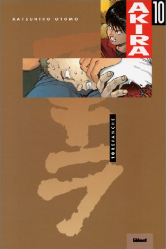akira, tome 10 : revanchekatsuhiro otomo 5 Néo-Tokyo, an 2019. Nous sommes trente-huit ans après la troisième Guerre mondiale. Le grand cataclysme a dévasté la planète. Depuis, le monde a entamé sa reconstruction. La capitale japonaise n'est plus qu'une espèce de gigantesque poubelle high-tech.
Une nuit, une bande de jeunes motards fait une rencontre étrange : celle d'un enfant au visage de vieillard, doté de bien curieux pouvoirs. Ils ne le savent pas encore, mais le processus de réveil d'Akira vient de commencer... Sombre vision d'un futur aux allures d'apocalypse, Akira dépeint une société en perdition livrée aux enfants mutants, aux sectes religieuses et aux forces surnaturelles. Avec son sens du mouvement et de la vitesse, le dynamisme de son graphisme et son hyperréalisme, cette saga, entamée en 1982, est l'une des oeuvres majeures de l'histoire des mangas. Elle est née de l'imagination de Katsuhiro Otomo, un auteur qui a largement contribué à faire reconnaître le genre hors des frontières de son pays natal. —Gilbert Jacques 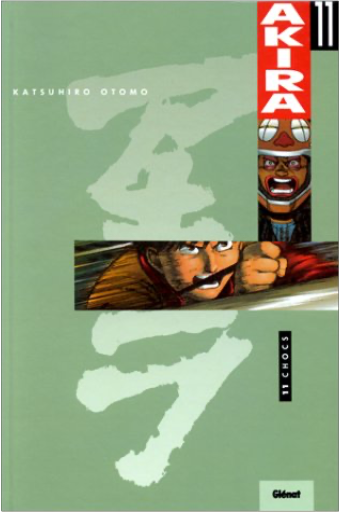akira, tome 11 : chocskatsuhiro otomo Néo-Tokyo, an 2019. Nous sommes trente-huit ans après la troisième Guerre mondiale. Le grand cataclysme a dévasté la planète. Depuis, le monde a entamé sa reconstruction. La capitale japonaise n'est plus qu'une espèce de gigantesque poubelle high-tech.
Une nuit, une bande de jeunes motards fait une rencontre étrange : celle d'un enfant au visage de vieillard, doté de bien curieux pouvoirs. Ils ne le savent pas encore, mais le processus de réveil d'Akira vient de commencer... Sombre vision d'un futur aux allures d'apocalypse, Akira dépeint une société en perdition livrée aux enfants mutants, aux sectes religieuses et aux forces surnaturelles. Avec son sens du mouvement et de la vitesse, le dynamisme de son graphisme et son hyperréalisme, cette saga, entamée en 1982, est l'une des oeuvres majeures de l'histoire des mangas. Elle est née de l'imagination de Katsuhiro Otomo, un auteur qui a largement contribué à faire reconnaître le genre hors des frontières de son pays natal. —Gilbert Jacques 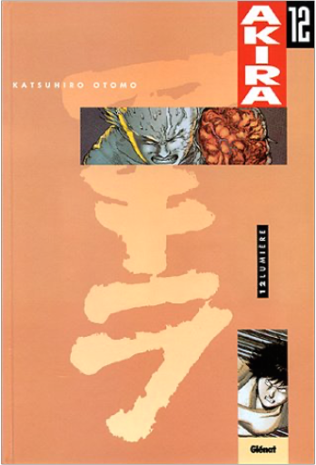akira, tome 12 : lumièrekatsuhiro otomo Néo-Tokyo, an 2019. Nous sommes trente-huit ans après la troisième Guerre mondiale. Le grand cataclysme a dévasté la planète. Depuis, le monde a entamé sa reconstruction. La capitale japonaise n'est plus qu'une espèce de gigantesque poubelle high-tech.
Une nuit, une bande de jeunes motards fait une rencontre étrange : celle d'un enfant au visage de vieillard, doté de bien curieux pouvoirs. Ils ne le savent pas encore, mais le processus de réveil d'Akira vient de commencer... Sombre vision d'un futur aux allures d'apocalypse, Akira dépeint une société en perdition livrée aux enfants mutants, aux sectes religieuses et aux forces surnaturelles. Avec son sens du mouvement et de la vitesse, le dynamisme de son graphisme et son hyperréalisme, cette saga, entamée en 1982, est l'une des oeuvres majeures de l'histoire des mangas. Elle est née de l'imagination de Katsuhiro Otomo, un auteur qui a largement contribué à faire reconnaître le genre hors des frontières de son pays natal. —Gilbert Jacques |

 Made with Delicious Library
Made with Delicious Library